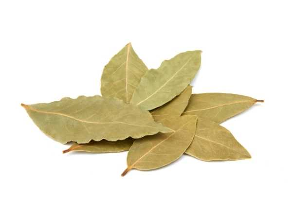

Laurus nobilis
Common Names: Bay Leaf, Sweet Bay, Bay Laurel, True Laurel
Local Name: Brinji Ilai (Tamil), Tej Patta (Hindi)
Family: Lauraceae
Origin: Mediterranean region
Plant Type: Evergreen shrub/tree, 7–18 m tall
| Trunk: | Smooth, olive-green bark when young, becoming grey-brown and fissured with age; often multi-stemmed. |
| Leaves: | Alternate, elliptic to lanceolate, 6–12 cm long, leathery, dark glossy green above and paler beneath. Strongly aromatic when crushed due to essential oil glands. |
| Flowers: | Small, pale yellow-green, star-shaped flowers borne in axillary clusters. Dioecious — male and female flowers on separate trees. |
| Fruit: | Small, shiny black berries (drupes), about 1 cm in diameter, each containing a single seed. Ripen in autumn. |
| Root System: | Moderately deep root system; tolerates container growing well due to compact root habit. |
| Climate: | Mediterranean climate preferred; tolerates mild temperate conditions. Hardy to USDA zones 8–10. |
| Temperature: | 15–25 °C optimal; can tolerate brief frosts down to −5 °C once established but young plants need protection. |
| Rainfall: | 600–1,200 mm annually; drought-tolerant once established. |
| Soil: | Well-drained, fertile loam with pH 6.0–7.0. Tolerates slightly alkaline soils; does not tolerate waterlogging. |
| Sunlight: | Full sun to partial shade; in hot climates, afternoon shade is beneficial. |
| Propagation: | Semi-hardwood cuttings in summer (slow to root, 3–6 months), seed (very slow germination, up to 6 months), or layering. |
| Spacing: | 3–5 m apart for trees; can be maintained as a hedge with closer spacing of 1–1.5 m. |
| Watering: | Moderate watering; allow soil to dry between waterings. Overwatering causes root rot. |
| Fertilization: | Light feeding with balanced organic fertilizer in spring. Avoid excessive nitrogen which reduces leaf aroma. |
| Pruning: | Responds well to pruning and shaping; traditionally grown as topiary. Prune in spring to maintain form and encourage bushy growth. |
| Pests & Diseases: | Bay sucker (Trioza alacris) causes leaf curling; scale insects and sooty mold. Phytophthora root rot in poorly drained soils. |
| Culinary Use: | Dried leaves are essential in Mediterranean, Indian, and French cuisine. Used in soups, stews, biryanis, bouquet garni, and pickling brines. |
| Essential Oil: | Bay leaf oil contains 1,8-cineole, linalool, and eugenol; used in aromatherapy, cosmetics, and food flavoring. |
| Ornamental Value: | Highly valued as an ornamental and topiary plant; classic container plant for formal gardens and doorway accents. |
| Production Regions: | Turkey is the world's largest producer and exporter; also grown commercially in Greece, Italy, and parts of India. |
| Digestive Aid: | Bay leaf tea is traditionally used to relieve bloating, gas, and indigestion. Compounds stimulate digestive enzyme production. |
| Blood Sugar: | Studies suggest bay leaf consumption may help improve insulin function and lower blood glucose levels in type 2 diabetes. |
| Respiratory Health: | Steam inhalation with bay leaves helps clear respiratory congestion. The essential oil has expectorant properties. |
| Anti-inflammatory: | Contains parthenolide and other sesquiterpene lactones with anti-inflammatory and analgesic properties used in traditional medicine. |
Add your field observations here.